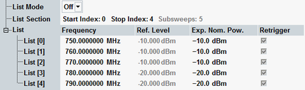

The parameters on the "List Configuration" tab activate and configure the list mode. In this mode, the I/Q vs. slot measurement extends over a series of consecutive subsweeps with individual analyzer settings, see "Power Steps and Subsweeps".

Enables or disables the list mode. "Off" means that the I/Q vs. slot measurement yields results for a single series of steps at constant analyzer settings (one subsweep). If the list mode is switched on, the R&S CMW measures a series of subsweeps in accordance with the "Freq. / Exp. Nom Pow. List" settings.
Remote command:Defines the number of measured subsweeps. The R&S CMW measures all subsweeps between the "Start Index" and the "Stop Index" in the list. The number of subsweeps measured (subsweeps = stop index - start index + 1) is displayed for information.
Note: The number of steps, i.e. the "Step Count" times the number of subsweeps must not exceed 3000. The R&S CMW auto-adjusts the settings if an excess step count or number of subsweeps is entered.
Definition of up to 200 not necessarily different pairs of frequencies and levels. The value range for the frequency covers the entire configurable input frequency range of the instrument, the level range depends on the selected RF connector.
The power values in the list configure the analyzer of the R&S CMW in accordance with the input power of the measured RF signal. Selecting (approximately) correct values can improve the accuracy of the I/Q vs. slot measurement. To avoid an overload of the input path, the "User Margin" must account for possible power variations of the input signal (crest factor).
Remote command: